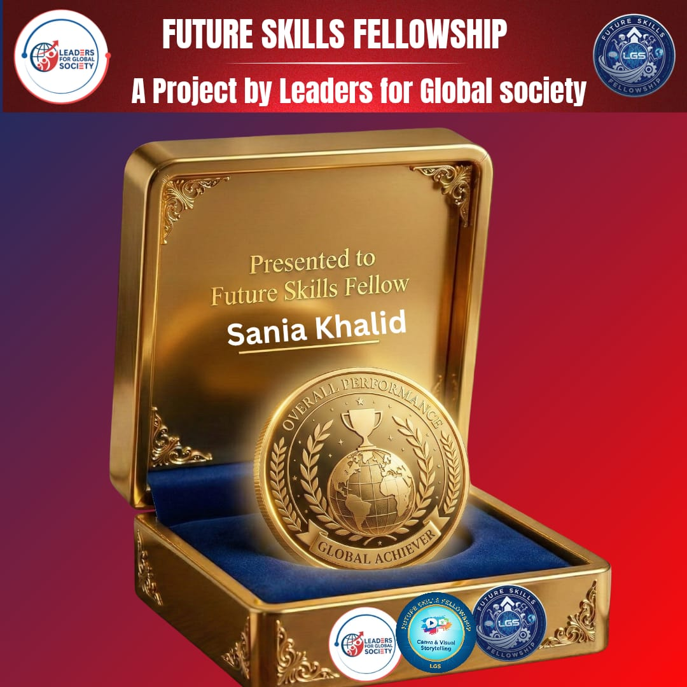
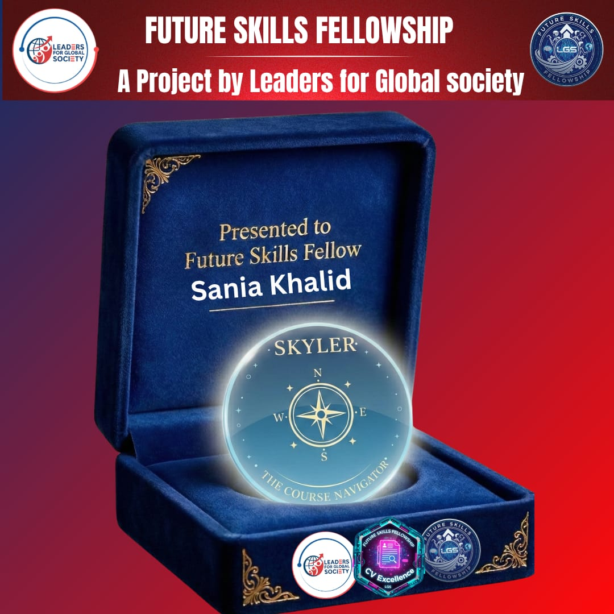
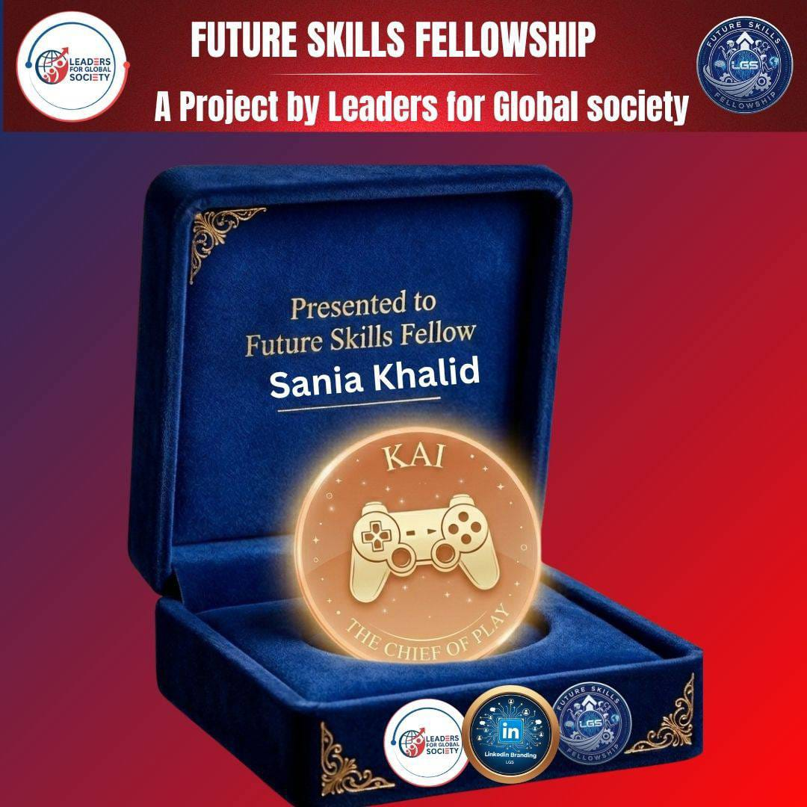
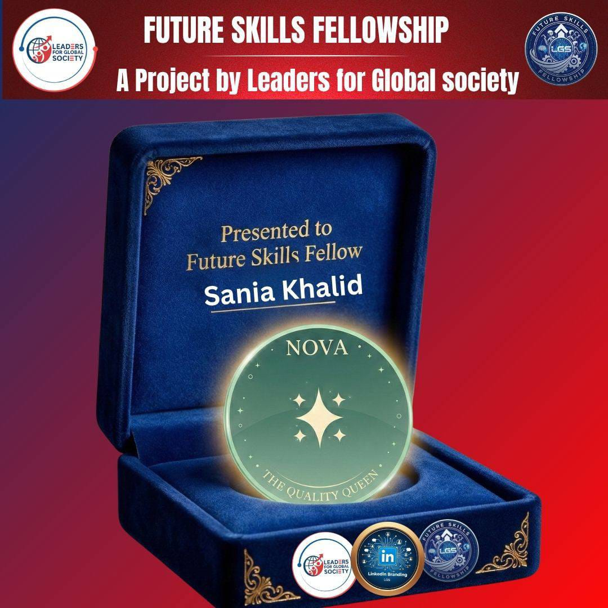

Every Achievement Started With One Opportunity
The Future Skills Fellowship gave me much more than certificates and badges. It gave me confidence, lifelong memories, new friendships, valuable skills, and the courage to believe in myself.
The Future Skills Fellowship gave me much more than certificates and badges. It gave me confidence, lifelong memories, new friendships, valuable skills, and the courage to believe in myself.
A journey I will always remember.
Being selected for the Future Skills Fellowship was one of the proudest moments of my academic journey.
To be honest, I never expected that I would be selected. More than 200 candidates reached the interview stage for the Future Skills Fellowship National Cohort, but only 50 fellows were shortlisted. When I found out that I had been selected as one of the 50 fellows in the Future Skills Fellowship National Cohort, I felt incredibly grateful and honored.
From the very first session, I realized this fellowship was different. Every mentor inspired us, every activity challenged us, and every week helped me become more confident than before.
This fellowship taught me that growth comes from continuous learning, teamwork, and believing in yourself.
Every badge represents dedication, participation, and continuous learning.

My proudest achievements throughout the fellowship.

Earned through active participation and continuous engagement during fellowship sessions.

Awarded for strong performance in fellowship games and interactive learning activities.

Awarded for excellence in assignment completion with dedication and a commitment to learning.
Every week was a new opportunity to learn.
Selected among the final 50 fellows after the interview process.
Learned Digital Communication and earned my first badges.
Explored Canva and Storytelling while developing creativity.
Improved my LinkedIn profile and personal branding skills.
Learned how to build an ATS-friendly professional CV.
Learned how to use AI tools efficiently and responsibly to achieve better results.
Capstone Presentation.
Successfully completed the Future Skills Fellowship with unforgettable memories.
This fellowship was not only about learning digital skills. It helped me become more confident, communicate better, think creatively, and prepare myself for future opportunities. Every mentor, every session, every activity, and every challenge contributed to my personal growth.
I sincerely thank Sir Aakash and the entire Leaders for Global Society team for believing in students and creating such a meaningful initiative.